15 Time-aware large language models towards a novel architecture for historical analysis
Overview
The presentation introduces a novel architectural approach for Large Language Models (LLMs), termed the “Time Transformer”, designed to imbue them with explicit temporal awareness. This innovation directly addresses the inherent limitation of current LLMs, which derive only an implicit understanding of time from statistical patterns within their training data. The speaker highlights that whilst existing models demonstrate remarkable capabilities, their lack of explicit temporal conditioning can lead to inconsistencies when processing information that evolves over time, such as historical data. The proposed “Time Transformer” integrates a dedicated temporal dimension directly into the token embeddings, thereby enabling the model to learn and reproduce changing linguistic patterns as a function of time. The authors validated this concept using a small generative LLM trained on a highly constrained dataset of Met Office weather reports, demonstrating its ability to efficiently capture and reproduce time-dependent linguistic shifts. The presentation explores the theoretical underpinnings of this approach, details the model architecture and data preparation, and presents two experiments demonstrating its efficacy in learning synthetic temporal drifts. Furthermore, it outlines potential applications, including historical analysis and instruction-tuned models, whilst acknowledging challenges related to fine-tuning and data curation.
15.1 Limitations of Current LLMs and the Need for Temporal Awareness
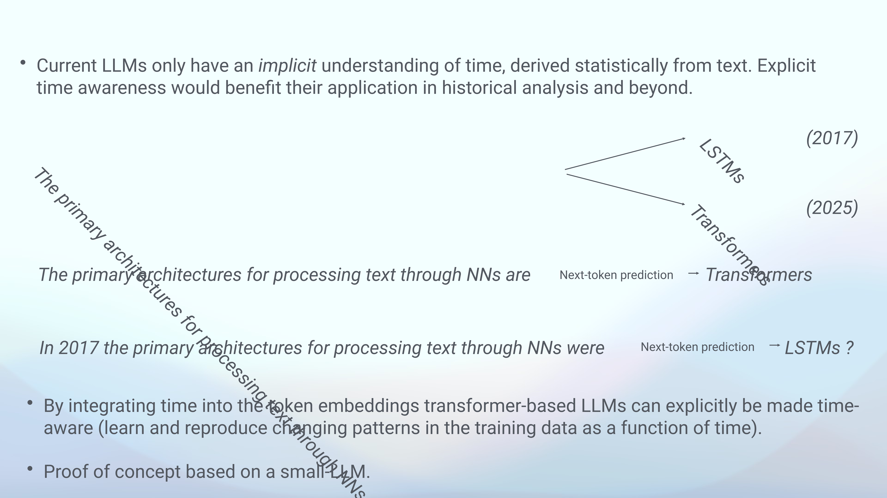
Current Large Language Models (LLMs) inherently possess only an implicit understanding of time, which they derive statistically from the vast textual corpora used for their training. Whilst these models exhibit a profound grasp of temporal concepts, their comprehension stems from subtle cues embedded within the data rather than explicit temporal conditioning. Explicit time awareness, however, would demonstrably enhance their utility, particularly within historical analysis and, indeed, across a broader spectrum of applications.
Consider, for instance, two sentences that differ solely in their temporal context, such as ‘The primary architecture for processing text through Neural Networks is LSTM’ and ‘The primary architecture for processing text through Neural Networks is Transformer.’ Without explicit temporal information, these statements, representing different states of affairs in 2017 and 2025 respectively, directly contradict one another within the LLM’s training data. The model then struggles to perfectly fulfil its objective, as it must arbitrarily favour one, inevitably making an error regarding the other. Furthermore, a discernible recency bias often influences LLM predictions, favouring more contemporary information. Current methods, such as prompt engineering, merely attempt to exploit the model’s implicit temporal understanding, akin to ‘fishing in the dark’ for desired outcomes.
To overcome these limitations, the authors propose integrating time directly into the token embeddings of Transformer-based LLMs. This architectural modification aims to render LLMs explicitly time-aware, enabling them to precisely learn and reproduce the evolving patterns within their training data as a direct function of time. A proof of concept, utilising a small generative LLM, has already been developed to validate this innovative approach.
15.2 Formalising Temporal Dependence in LLMs
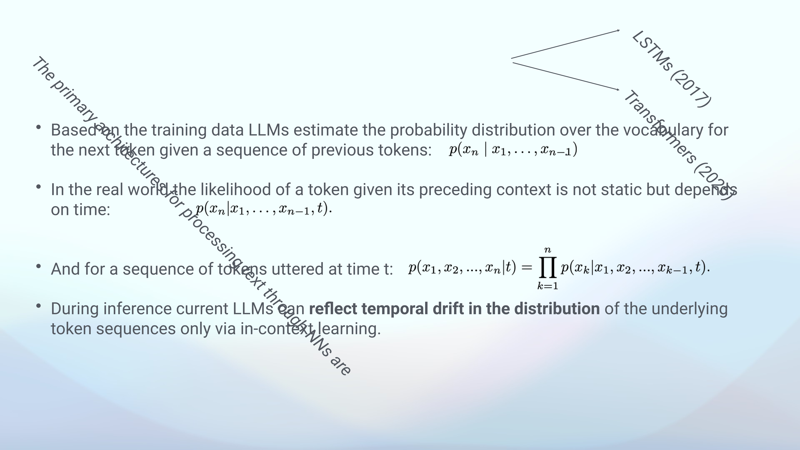
Fundamentally, Large Language Models operate by estimating the probability distribution over their vocabulary for the next token, conditioned on a given sequence of preceding tokens. This process is mathematically represented as p(x_n | x_1, …, x_{n-1}). However, in real-world scenarios, the likelihood of a token appearing within a specific context is not static; rather, it is intrinsically dependent on time, thus becoming p(x_n | x_1, …, x_{n-1}, t).
Extending this principle, the joint probability for an entire sequence of tokens uttered at a particular time t is expressed as the product of conditional probabilities: p(x_1, …, x_n | t) = product p(x_k | x_1, …, x_{k-1}, t). Despite this inherent temporal variability, current LLM training processes frequently treat these probability distributions as static. Consequently, during inference, these models can only reflect temporal drift in the underlying token sequences through in-context learning, a mechanism that relies on the immediate context provided rather than an explicit, integrated understanding of time.
15.3 Addressing Temporal Drift in LLM Training
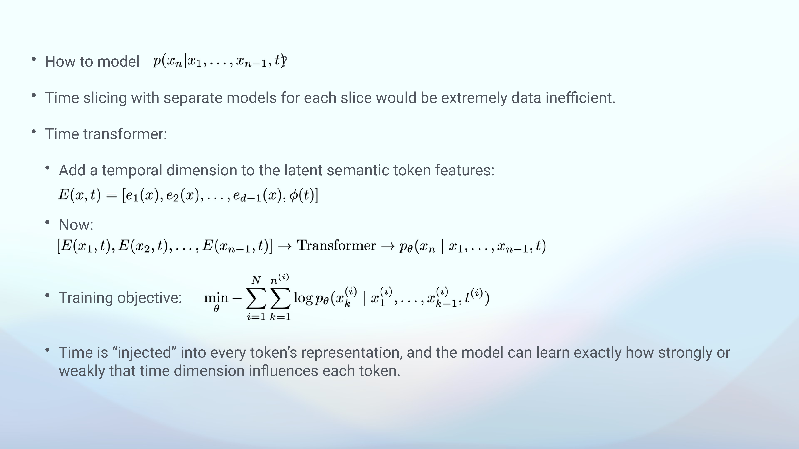
A significant challenge in current Large Language Model (LLM) training lies in their tendency to treat inherently time-dependent probability distributions as static. This simplification means that whilst the real-world likelihood of a token given its preceding context is a direct function of time—for instance, the probability of ‘transformer’ completing a sentence was effectively zero in 2017—LLMs primarily reflect such temporal drift only through in-context learning during inference.
To improve upon this, the authors must develop more effective methods for modelling these dynamic, time-dependent probability distributions. Existing strategies, such as ‘time slicing’—where distinct models are trained for specific temporal segments, assuming static distributions within those slices—prove remarkably data inefficient. A more streamlined and integrated approach is therefore imperative.
15.4 The Time Transformer Concept and Data Acquisition
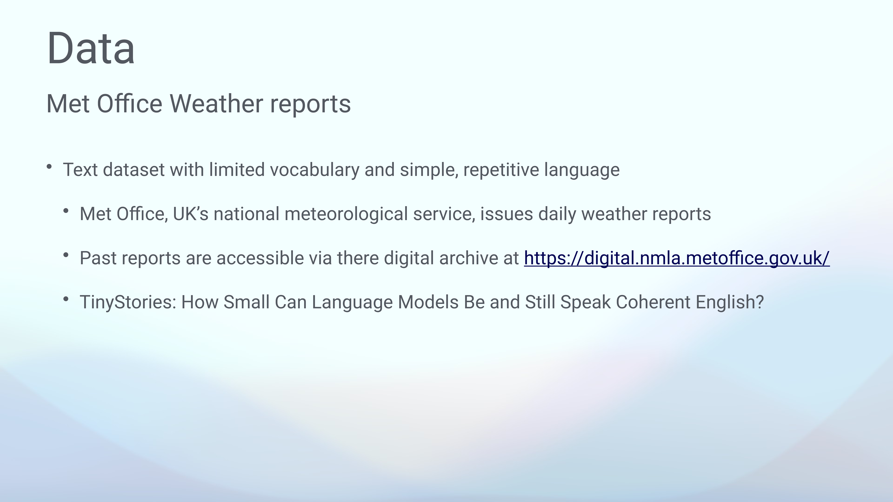
To overcome the limitations of implicit temporal understanding, the authors propose an innovative solution termed the ‘Time Transformer’. This concept centres on a remarkably simple yet profound architectural adjustment: reserving a single dimension within the token embedding space specifically for time. This dedicated dimension explicitly conveys the utterance date for each token sequence, thereby providing direct temporal context.
The initial implementation employs a non-trainable, min-max normalised ‘day of the year’ as the time embedding. This particular choice strategically exploits natural seasonal variations inherent in the chosen dataset, such as the prevalence of snow in winter or heat in summer. However, the framework readily accommodates alternative time embeddings as required.
For the proof of concept, the research team selected Met Office weather reports as the primary dataset. This text corpus is characterised by its limited vocabulary and simple, repetitive language, making it an ideal candidate for initial validation. The UK’s national meteorological service issues these daily reports, and historical data remains accessible through their digital archive. Additionally, the ‘TinyStories’ dataset was identified as another potentially suitable resource for similar investigations.
15.5 Weather Report Dataset Processing

The research team systematically acquired the dataset by scraping daily weather reports from Met Office PDFs spanning the years 2018 to 2024. This process yielded approximately 2,500 reports, each comprising between 150 and 200 words. For text processing, the team employed tf.keras.layers.TextVectorization, standardising the input by converting text to lowercase and stripping punctuation. Crucially, the tokenisation process avoided sub-word segmentation and deliberately neglected case and interpunctuation, reflecting the inherently simple nature of the language. This straightforward approach resulted in a remarkably concise vocabulary of just 3,395 unique words across the entire seven-year corpus. An illustrative example, the Daily Weather Summary for Sunday 04 August 2019, details showery rain and mist, whilst the Daily Extremes table highlights a highest maximum temperature of 27.5°C recorded in Writtle, Essex, and a lowest maximum of 14.1°C in Fair Isle, Shetland.
15.6 Vanilla Transformer Model Architecture and Training
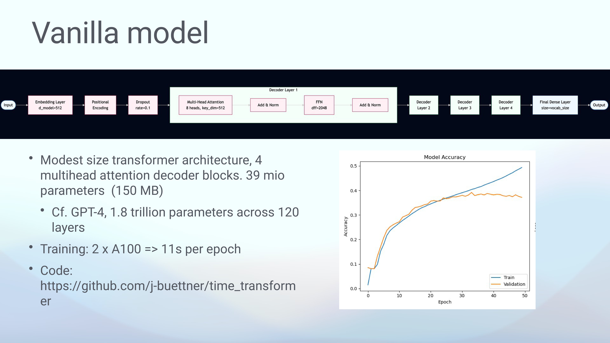
The authors constructed a modest-sized, decoder-only Transformer architecture, termed the ‘Vanilla model’, to establish a baseline for language pattern learning within the weather report dataset. This architecture processes input through an Embedding Layer with a d_model of 512, followed by Positional Encoding and a Dropout layer set at a 0.1 rate. Subsequently, the processed input traverses a stack of four Multi-Head Attention Decoder Blocks. Each decoder layer comprises a Multi-Head Attention mechanism with eight heads and a key_dim of 512, succeeded by an Add & Norm operation, then a Feed Forward Network (dff=2048), and another Add & Norm. The final output from these layers feeds into a Dense Layer, sized to the vocabulary, which ultimately produces the model’s output.
This compact model contains 39 million parameters, equating to approximately 150 MB, a stark contrast to models such as GPT-4, which commands 1.8 trillion parameters across 120 layers. Despite its modest scale, the model trains with remarkable efficiency on an HPC cluster in Munich, utilising two A100 GPUs, completing each epoch in merely 11 seconds—a speed attributable to both the small dataset and the model’s compact size. The associated code, available on GitHub, was primarily developed for foundational understanding rather than production use. During training, the model’s accuracy steadily improved, with training accuracy reaching approximately 0.47 and validation accuracy stabilising around 0.38, demonstrating its capacity to perfectly reproduce the language patterns observed in the weather reports.
15.7 Integrating Time into the Transformer Architecture
The established ‘Vanilla model’ demonstrates a robust capacity to perfectly reproduce the language of weather reports. For instance, when provided with a seed sequence such as ‘During the night, a band…’, the model autoregressively generates coherent and contextually relevant text, closely mimicking actual weather forecasts.
The transition to a ‘Time Transformer’ involves a remarkably minimal architectural adjustment. Instead of solely embedding all information within a 512-dimensional latent semantic space, the authors propose reserving one dimension specifically for temporal data. This dedicated dimension explicitly informs each token about the precise date on which its sequence was uttered. The current implementation employs a non-trainable, min-max normalised ‘day of the year’ as this time embedding, a choice driven by the desire to leverage natural seasonal variations inherent in weather data, such as the distinct patterns of snow in winter and heat in summer. Crucially, this design allows for the integration of various other time embedding approaches as required by different datasets or research objectives.
15.8 Dataset Characteristics and Tokenisation for Time-Aware Models
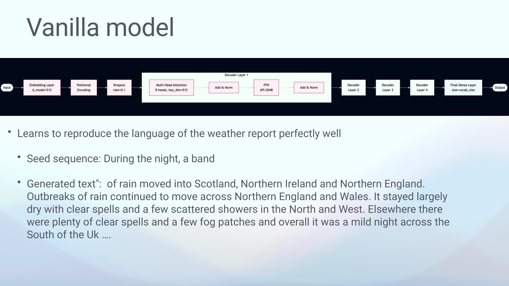
To rigorously test their proposed time-aware model, the authors sought a dataset characterised by restricted, repetitive language and a small vocabulary, thereby simplifying the task of pattern learning. The UK Met Office weather reports proved an ideal choice, readily accessible online from the national meteorological service. The ‘Tiny Stories’ dataset was also identified as a potential alternative for future investigations.
The data, originally presented as monthly PDFs containing daily reports, was systematically scraped for the period spanning 2018 to 2024. This yielded approximately 2,500 reports, each comprising between 150 and 200 words. The tokenisation process remained intentionally simple, eschewing sub-word segmentation and deliberately neglecting both case and interpunctuation. This streamlined approach underscored the inherent simplicity of the language, resulting in a remarkably compact vocabulary of just 3,400 words across the entire seven-year corpus.
15.9 Comparative Architecture of Vanilla and Time Transformers
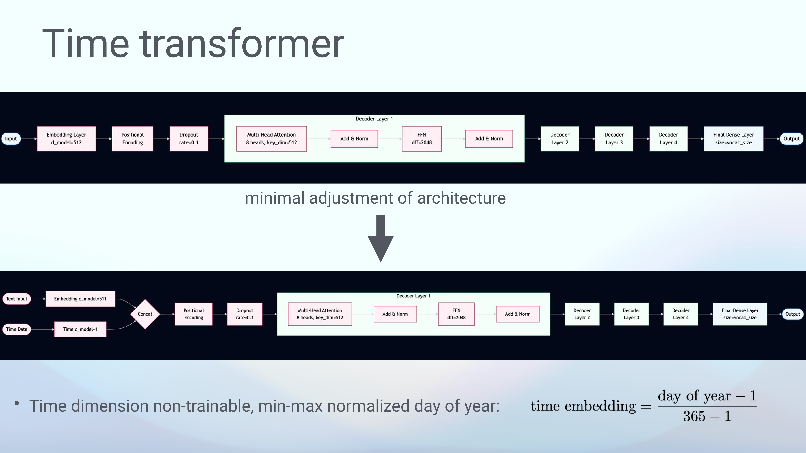
The ‘Time Transformer’ represents a minimal yet impactful architectural adjustment to the standard Transformer decoder. In a conventional Vanilla Transformer, the input directly flows into an Embedding Layer, typically with a d_model of 512, followed by Positional Encoding, a Dropout layer, and then a series of four Decoder Layers before culminating in a Final Dense Layer and the ultimate output.
Conversely, the ‘Time Transformer’ introduces two distinct inputs: textual data and temporal data. The textual input undergoes embedding into a d_model of 511, whilst the temporal data is embedded into a dedicated d_model of 1. These two embedded streams are then concatenated, maintaining the overall embedding dimension, before proceeding through the familiar sequence of Positional Encoding, Dropout, and the identical stack of four Decoder Layers. The time dimension itself is implemented as a non-trainable, min-max normalised ‘day of the year’, calculated using the formula (day of year - 1) / (365 - 1). This explicit integration directly addresses the fundamental challenge that whilst Large Language Models estimate token probabilities based on preceding sequences, real-world token likelihoods are inherently time-dependent, a dynamic often overlooked by training processes that treat distributions as static. Consequently, without this explicit temporal conditioning, current models can only reflect temporal drift through less efficient in-context learning during inference.
15.10 Experiment 1 - Efficient Learning of Temporal Drift (Synonymic Succession)
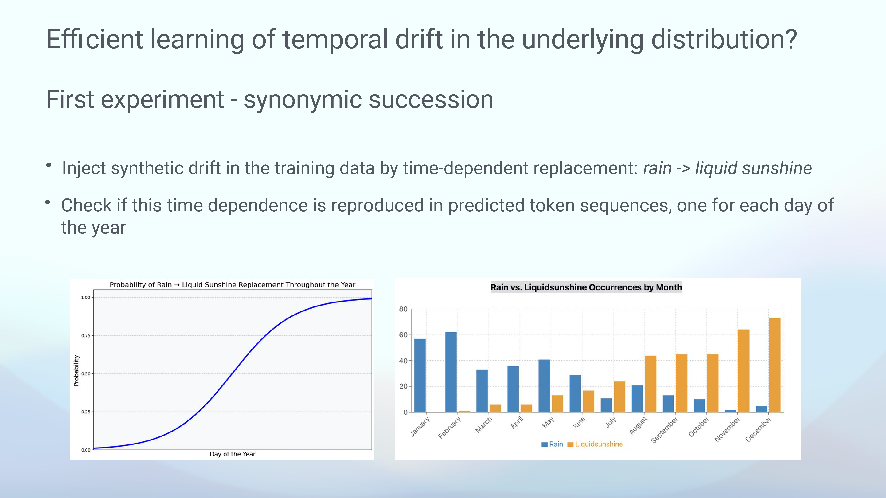
To assess the ‘Time Transformer’s’ capacity for efficiently learning temporal drift, the authors conducted a ‘synonymic succession’ experiment. This involved injecting a synthetic, time-dependent drift directly into the training data: the word ‘rain’ was progressively replaced by ‘liquid sunshine’ throughout the year. The objective was to ascertain whether the model could reproduce this engineered temporal dependence within its predicted token sequences for each day of the year.
The probability of this replacement followed an S-shaped curve, commencing near zero in January and gradually ascending to approach 1.00 by the year’s end. Analysis of monthly occurrences in the generated sequences clearly demonstrated the model’s successful capture of this drift: ‘Rain’ occurrences predominated in the earlier months, whilst ‘Liquidsunshine’ became significantly more frequent and eventually dominant in the latter half of the year, particularly from August through December.
15.11 Experiment 2 - Changing Weather Patterns and Collocation Fixation
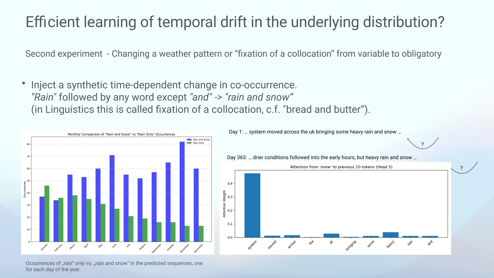
A second experiment, termed ‘changing a weather pattern’ or ‘fixation of a collocation’, further investigated the model’s ability to capture temporal shifts. This involved injecting a synthetic, time-dependent change in co-occurrence: the pattern ‘rain’ followed by any word other than ‘and’ was progressively altered to ‘rain and snow’. Linguistically, this simulates the ‘fixation of a collocation’, akin to the established phrase ‘bread and butter’.
The results, visualised through monthly comparisons, clearly demonstrated the injected temporal shift. ‘Rain Only’ occurrences were notably higher in the first half of the year, whilst ‘Rain and Snow’ occurrences became significantly more frequent in the latter half, peaking around October and November. Furthermore, an analysis of attention weights revealed that the token ‘snow’ consistently exhibited the highest attention on ‘rain’, followed by ‘heavy’ and ‘and’ (specifically in Head 5), indicating that the model successfully learned this evolving co-occurrence pattern. Example sentences from Day 1 and Day 363 illustrate this learned association, consistently featuring ‘heavy rain and snow’ as the year progresses.
15.12 Proof of Concept, Applications, Next Steps, and Challenges
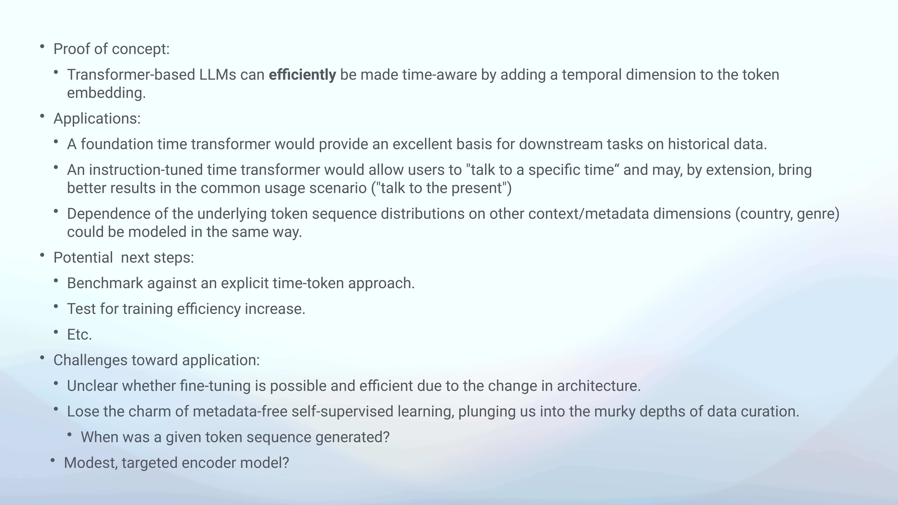
The conducted research establishes a clear proof of concept: Transformer-based Large Language Models can be efficiently rendered time-aware through the integration of a dedicated temporal dimension within their token embeddings. This innovation opens several compelling applications. A foundational ‘Time Transformer’, for instance, could provide an exceptional basis for a myriad of downstream tasks involving historical data. Moreover, an instruction-tuned variant would empower users to ‘talk to a specific time’, potentially yielding superior results even in common usage scenarios where interaction with the present is desired. Beyond temporal dynamics, the methodology readily extends to modelling dependencies on other contextual or metadata dimensions, such as country or genre.
Future research endeavours include benchmarking this approach against explicit time-token methods and rigorously testing for potential increases in training efficiency. Nevertheless, challenges persist towards broader application. Uncertainty surrounds the feasibility and efficiency of fine-tuning due to the architectural modifications. Furthermore, the approach necessitates a departure from the simplicity of metadata-free self-supervised learning, plunging the authors into the intricate complexities of data curation. Fundamental questions also arise, such as determining the generation time of a given token sequence and exploring the utility of a more modest, targeted encoder model.
15.13 Supplementary Resource
A supplementary resource, specifically a ChatGPT conversation, is available for further exploration. This resource can be accessed directly via the provided URL: https://chatgpt.com/c/67b8237a-2a48-8012-9862-80af84830a17.
15.14 Additional Visual Materials
The following slides provide supplementary visual information relevant to the presentation:
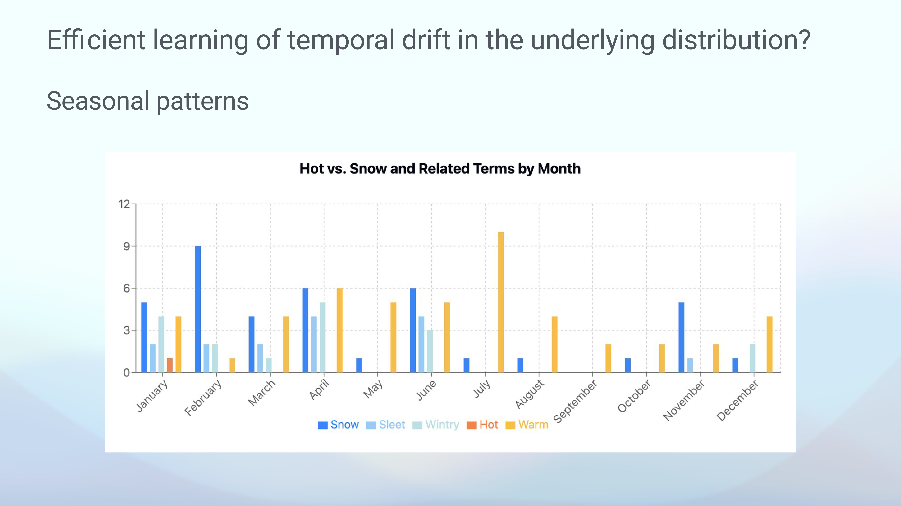 Failed to analyse slide